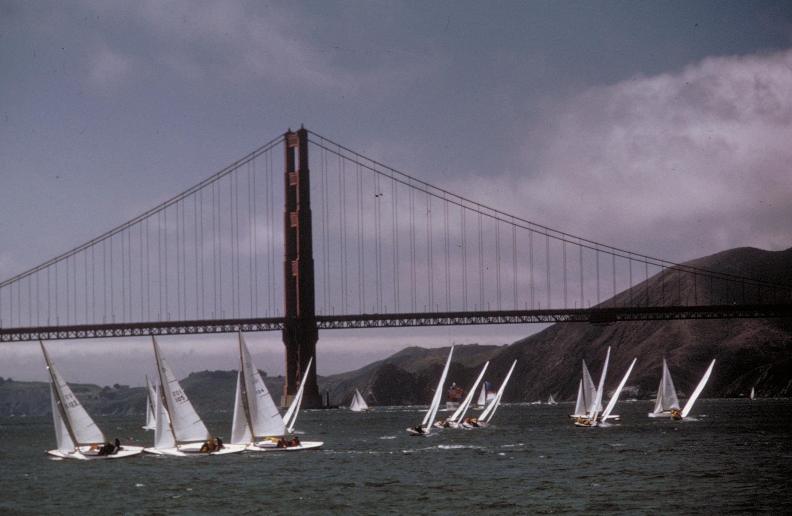

Find a sail.
Get on the water with great people.
Races. Day sails. Deliveries. Practice sails. More ways to get on the water.
Soonest first

Get on the water with great people.
Races. Day sails. Deliveries. Practice sails. More ways to get on the water.
Soonest first